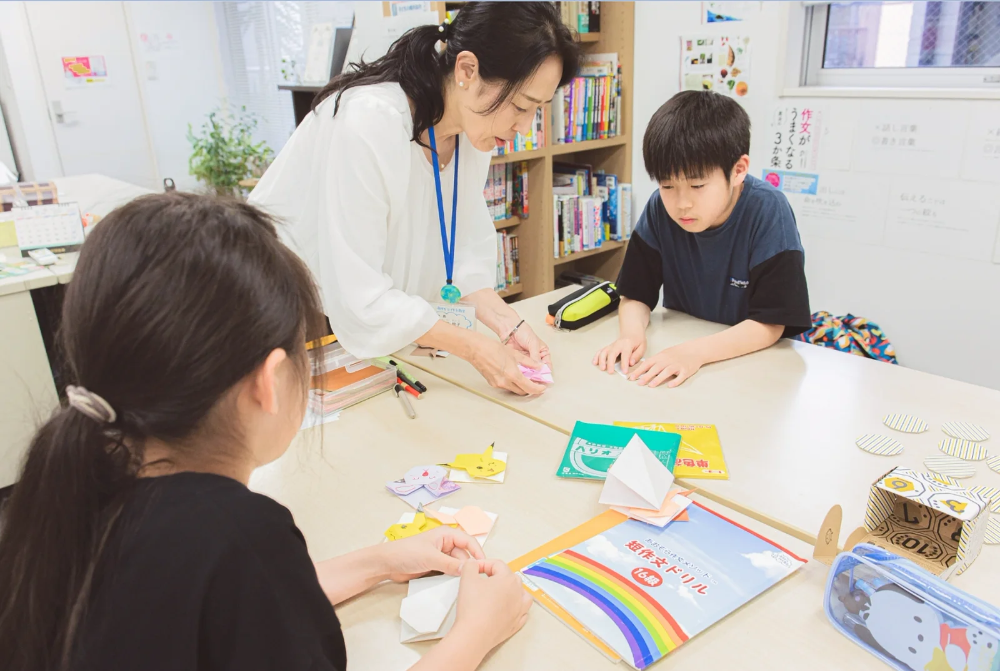

推薦入試で見られること
都立の推薦入試では、通知表の成績（調査書）に加えて、全員が個人面接を受けます。ほかに作文や小論文など、学校ごとに決めた検査があります。 自己PRカードは点数になりませんが、面接はこのカードをもとに行われます。つまり、自己PRカード・作文・面接は別々の準備ではなく、一続きです。「自分は何を大事にしてきたか」が決まると、三つとも書きやすく、話しやすくなります。
作文のテーマと書き方
作文が苦手な子ほど「いきなり書く」ことでつまずきます。あおぞら作文教室では、書く前に話すことから始めます。
作文の練習は、書く前の準備から始まります。教室では会話をしながら、長所・短所、好きな科目・苦手な科目を整理し、本人の希望と志望校が合っているかを確かめます。何を書くかが決まると、作文も自己PRも書き始められます。
推薦の作文では、自分の経験をもとに書く問題が出ることがあります。たとえば令和8年度の都立足立高校は「あきらめずに行動した経験」、足立新田高校は「物事を最後までやり遂げることの大切さ」を、自分の経験を踏まえて書く問題でした。
テーマは学校ごと、年度ごとに違います。まず志望校の過去の問題を、親子で一度見てください。東京都教育委員会のサイトで、過去の作文・小論文のテーマが公開されています。
出典：令和8年度 推薦に基づく選抜の小論文・作文テーマ等一覧（東京都教育委員会） →
推薦入試の無料相談（30分・Zoom）を予約する作文が苦手なお子さんの今の様子を、初回の相談で聞かせてください。
面接でよく聞かれること
面接は、自己PRカードをもとに行われます。カードに書いたことと話すことが食い違わないよう、カードと面接は一続きで準備します。 志望理由、中学校で力を入れたこと、高校でしたいことなど、何を聞かれても「なぜそう思うのか」を自分の言葉で答えられることが大切です。暗記した文を読み上げるより、自分の経験に結びついた言葉のほうが伝わります。 学校によっては、面接の中で決められた時間の自己PRをするところや、集団討論を行うところもあります。志望校の実施方法は、東京都教育委員会の一覧で確かめられます。※18
内申と推薦の関係
推薦でも、通知表の成績（調査書）は点数に入ります。評定（5段階）を使う学校と、観点別の評価を使う学校があります。配点も学校ごとに違い、たとえば令和9年度の都立足立高校は、調査書450点・面接240点・作文240点です。 通知表の評定は、テストの点数の区切りで決まるものではなく、教科の目標に照らした学習の状況で決まります。成績は「知識・技能」「思考・判断・表現」「主体的に学習に取り組む態度」の3つの観点で見られます。生活の様子は、評定とは別の欄で見られます。 内申が足りるかは、志望校の配点と中学校の校内の基準で変わります。担任の先生にも確かめてください。
推薦を受けるか決める前に
推薦入試は、かんたんな入試ではありません。令和8年度の都立推薦（全日制）は、受けた約2万人（20,428人）のうち、合格は約9千人（9,150人）でした。倍率は全体で2.18倍、普通科（コース・単位制以外）では2.50倍です。学科によっても差があります。
出典：東京都教育委員会「令和8年度都立高等学校の推薦に基づく選抜の入学者選抜合格発表」
決める前に、知っておきたいことがあります。
- 推薦で受けられるのは第1志望の1校（1つの科・コース）だけで、出願後に変えることはできません。
- 推薦で合格したら、その学校に入学します。都立の一般入試は受けられません。
- 作文と面接の準備には時間がかかります。その分、一般入試の勉強の時間が減ります。
内申に比べて模試の結果が高い子や、作文や面接への苦手意識がとても強い子は、一般入試に力を集めたほうがよい場合もあります。相談の結果、「今年は一般入試に絞りましょう」とお話しすることもあります。推薦を受けるかどうかを決めるための相談も、歓迎しています。
令和9年度の日程（東京都教育委員会）
| 推薦 | 出願 2027年1月8日〜18日（ネットでの入力は2026年12月18日から）／検査 1月26日・27日／合格発表 2月2日 |
|---|---|
| 一般（第一次募集） | 出願 1月29日〜2月4日／学力検査 2月21日／合格発表 3月1日 |
よくある質問
自己PRカードは点数になりますか？
自己PRカードそのものに点数はつきません。ただし、面接はこのカードをもとに行われます。書いたことを自分の言葉で話せるように準備します。
推薦がだめだったら、一般入試は受けられますか？
受けられます。推薦で結果が出なくても、2月の学力検査（一般入試）で同じ学校や別の学校を受けられます。
推薦は何校受けられますか？
第1志望の1校（1つの科・コース）だけです。出願後に変えることはできません。
推薦に合格したら、一般入試も受けられますか？
推薦で合格した場合は、その学校に入学することになり、都立の一般入試は受けられません。
推薦の出願には、何が必要ですか？
通っている中学校の校長先生の推薦が必要です。校内の基準は中学校ごとに違うので、まず担任の先生に相談してください。
推薦の検査には、何がありますか？
全員に個人面接があり、ほかに作文や小論文など学校ごとに決めた検査があります。集団討論は行う学校と行わない学校があります。受検料は全日制で2,200円です。